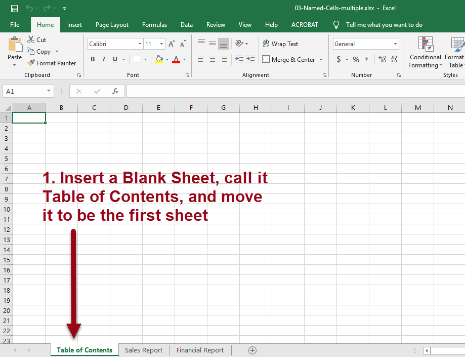
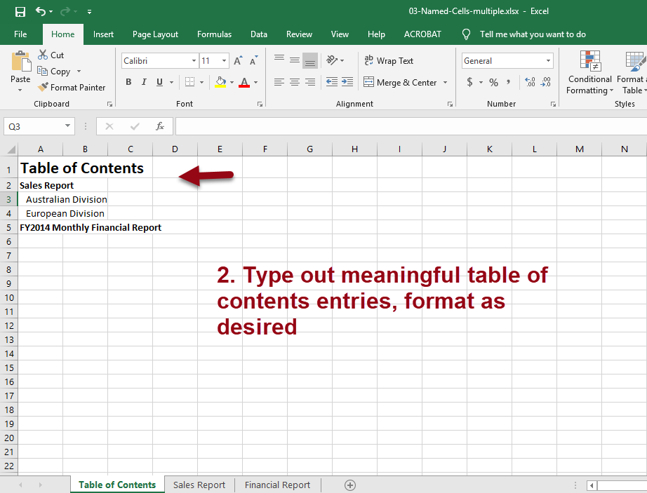
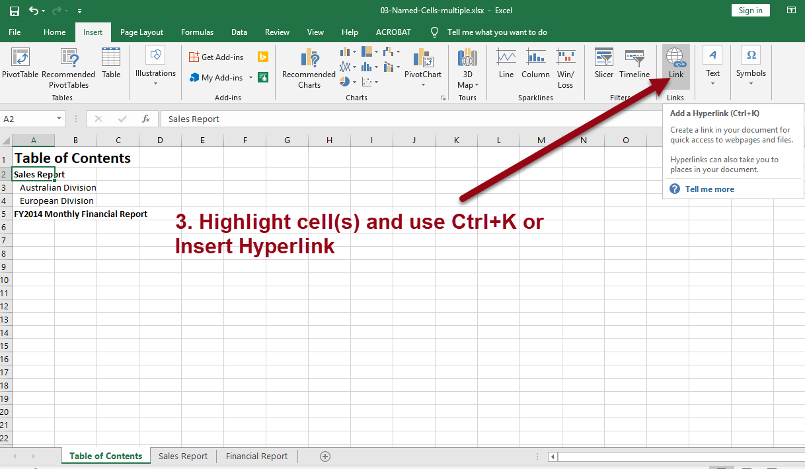
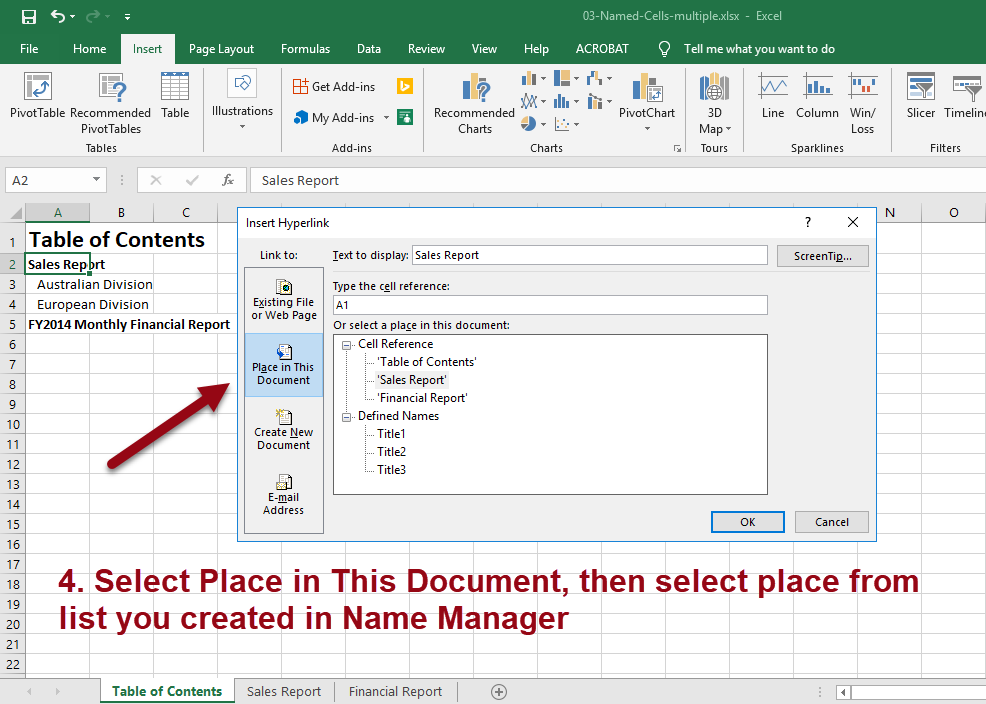
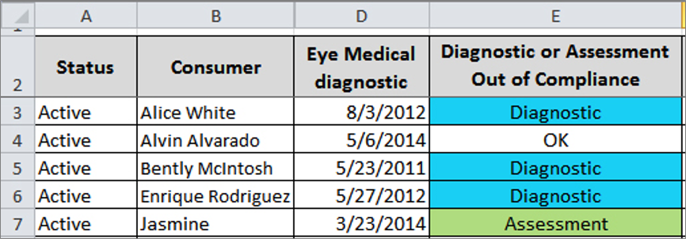
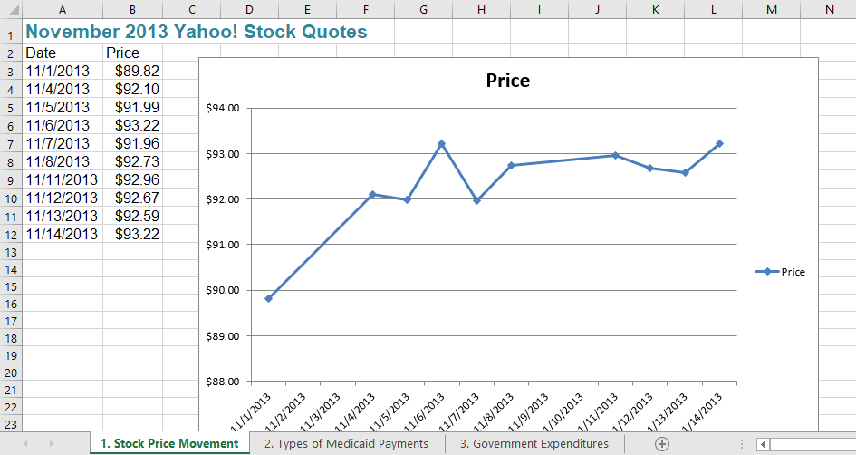
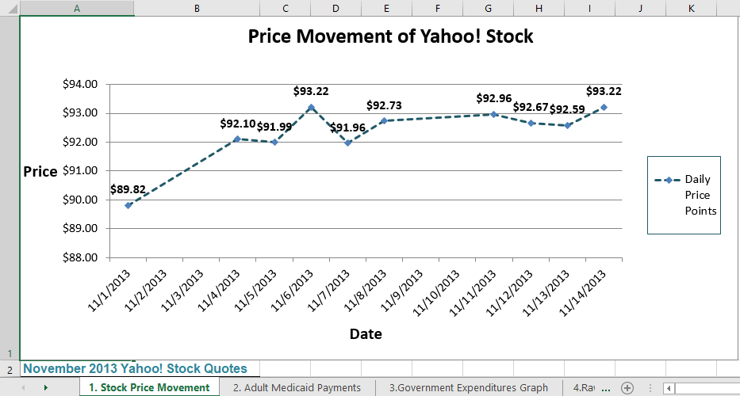
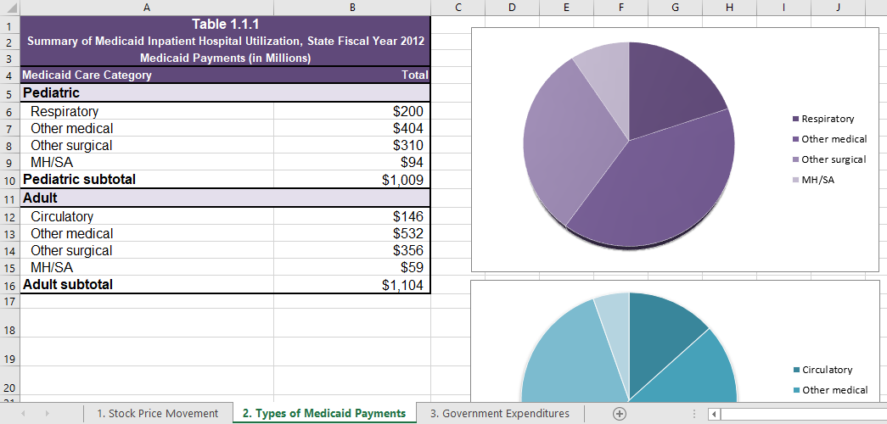
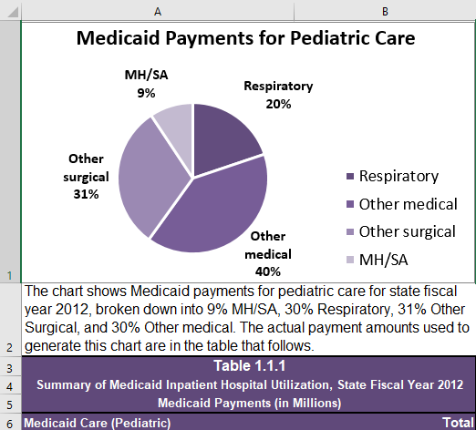
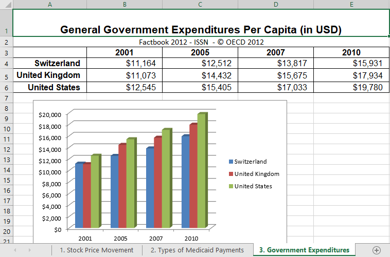

Accessible Excel 2016/365

By Richard Steinberg
Accessibility Implementation Lead
Wells Fargo Digital Solutions for Business (DS4B)
(To view slides and speaker notes, press S key)
Introductions
Accessibility Considerations
- Keyboard Only
- Screen Magnification
- Use of Color
- Screen Reader Friendly
- Cognitive Load
General Tips
- Make sure your language is set in Excel properties/complete Metadata
- Make sure sheets have unique names and delete unused sheets
- If a sheet has multiple tables, blank row between each. Best practice one table per sheet.
- Complex tables can only be made accessible if Excel version converted to PDF or HTML
- Remove comments
- Don't embed multimedia
- If your sheet needs instructions, put them in A1 cell
- Set zoom level and focus on starting cell for each sheet (usually A1)
- Add alternative text for charts and graphs--more on this later
Can You Spot the Differences?
Links below open files in MS Excel
| Before Remediation | After Remediation |
|---|---|
 |
 |
Before and After
What did you find?
- Unused rows and columns hidden
- Shading
- Named tabs
- Extra worksheet deleted
- Merged cells
- Wording changed
- Spacing changed
- Font changed
- White text--end of sheet
- Zoom level different
- Sheet named
JAWS Announcing Before and After
ZoomText Displaying Before and After
Spacing and Fonts
Optimize for users who use screen magnification.
How to Set the Default Font

Simplyfying Tables
- Use a simple table structure and specify row and column header information.
- If your table is not structured like that, you need to rethink it.
How Can This Table Be Simplified?
Picture below is a link that opens file in MS Excel
How Can This Table Be Simplified? Solved.
Picture below is a link that opens file in MS Excel
Importance of Table Headers
- When creating a table from scratch, Excel allows you to define table headers.
- This information is not communicated to all screen reader users.
Using Name Manager
- Microsoft Excel has a built-in function called Name Manager that can be used to give names to a cell or range of cells.
- Using a special naming convention, JAWS and NVDA can recognize table header rows and columns. Microsoft reports that Narrator also recognizes this coding.
- Determine if table has column headers, row headers, or both column and row headers
- Define regions as long as they begin with the string Title, ColumnTitle, or RowTitle.
- Each name in a workbook no matter what sheet it is on must have a unique name.
- Download before practice Excel file. In practice file, we'll start Sheet 1, 1. Contact List
- Download after practice Excel file to compare.
Column Title Steps
In practice file, this is on Sheet 1, 1. Contact List
JAWS and Column Title
Rows Title Steps
Row and Column Titles
Multiple Tables
- The original method of writing a name for a region in a Workbook with mulltiple tables was
TitleRegion#.TopLeftCell.BottomRightCell.WorksheetNumber - Recent versions of JAWS and NVDA now let you omit the top left cell, bottom right, and the worksheet number.
- You may use this technique throughout a workbook containing many worksheets, as long as each name is unique.
- Using the third example in Excel file (Vocational Rehabilitation Program), the old naming convention would have been
TitleRegion1.A2.C11.3
Multiple Tables Example
Mutiple Tables on Multiple Worksheets Example
TOC for Multiple Sheets




TOC for Multiple Sheets-Completed
Intro to Color Blindness

Pie Chart Examples


Checking Colors
- Colour Contrast Analyser: https://developer.paciellogroup.com/resources/contrastanalyser/
- WebAIM Color Contrast Checker: https://webaim.org/resources/contrastchecker/
- LevelAccess RGB Color Contrast Checker: https://www.levelaccess.com/color-contrast-checker/
- SBF Color Contrast Checker / Analyzer (RGB and Hex): https://www.sbwfc.co.kr/ColorChecker/
- Hex to RGB Converter (or similar): https://www.rapidtables.com/convert/color/hex-to-rgb.html
Working with Charts and Alt Text
Links below open files in MS Excel
| Before Remediation | After Remediation |
|---|---|
|  |  |
Before and After Chart 1
Before and After Chart 2
 
Before and After Chart 3
 
Bonus Tip: Form Fields
- Add borders for low vision users
- Add light shading for all users
- Add tooltips for cells where information needs to be entered
- Go to Data Tab and select Data Visualization, then Data Visualization
- Enter a brief message to announce to screen reader users
- All users will see the input message on hover
- Example form, MyForm.xlsx